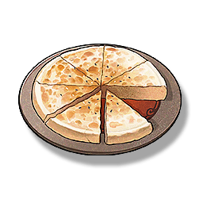

Helmet Flatbread
Supplies

Increase the defense power of all Resonators in the team by 15%, lasts 15 minutes, only effective for your own Character in multiplayer games.
An ordinary baked cake, but it carries the memory of the difficult times of the residents of Huanglong.